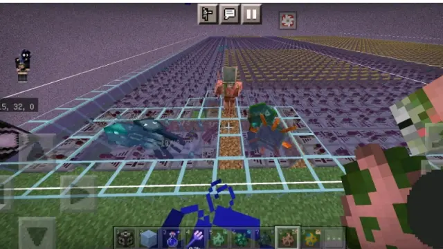
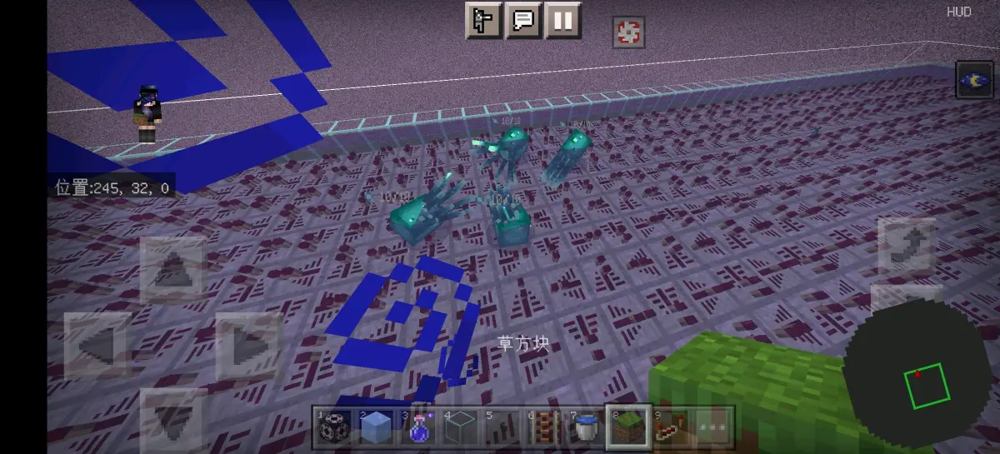
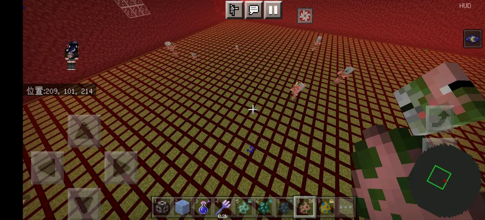
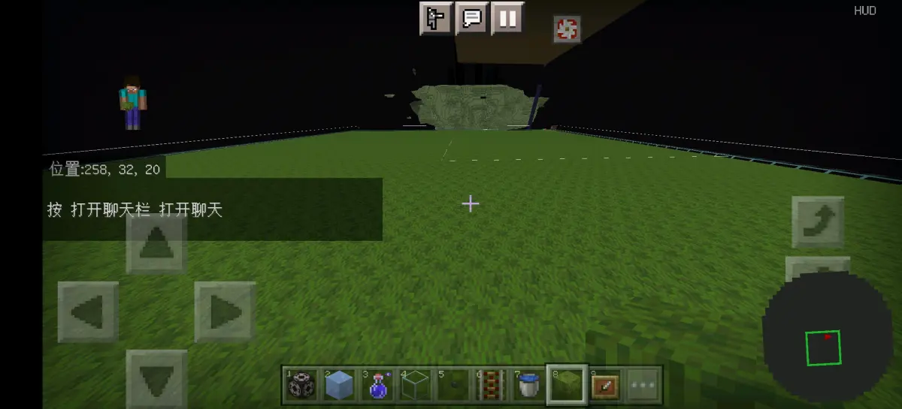
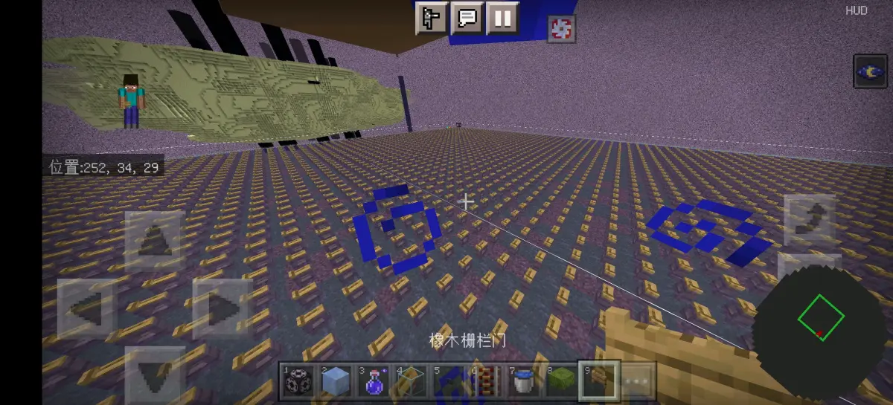
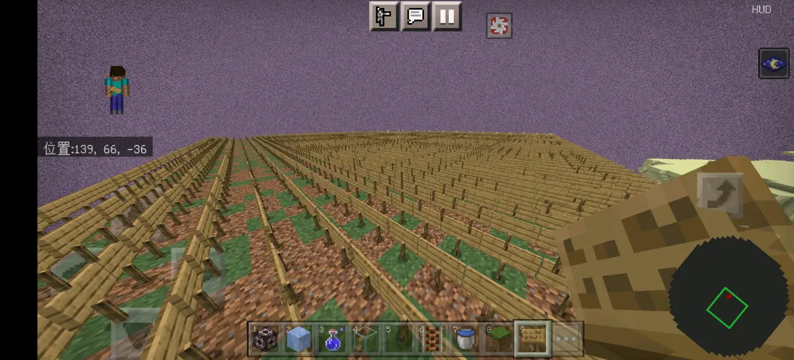
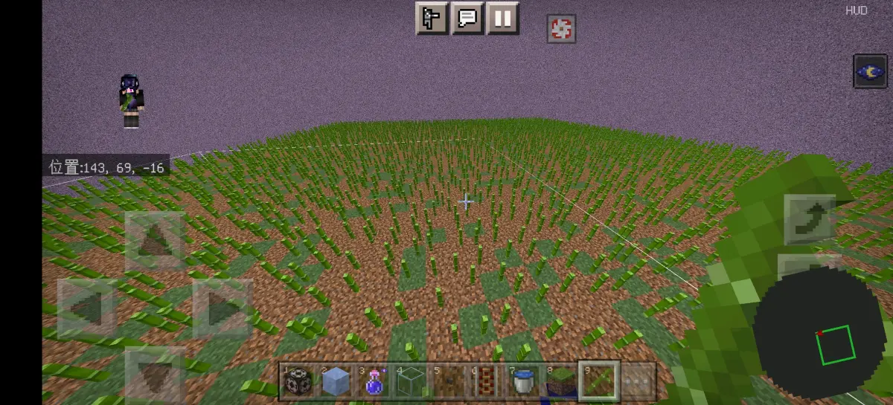
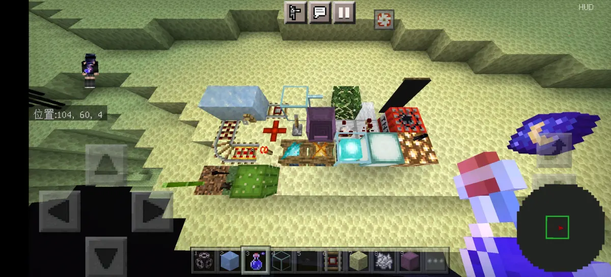
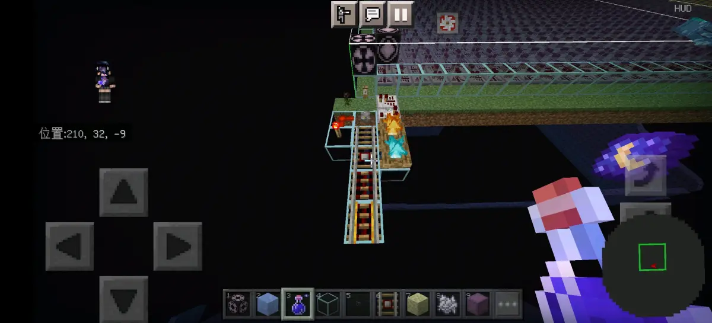
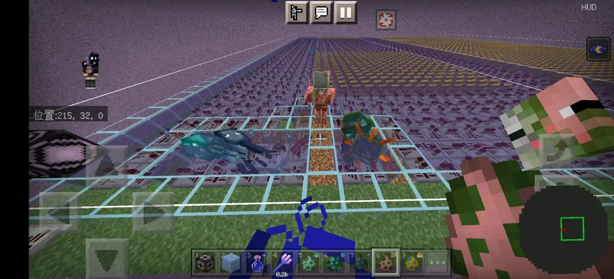

众所周知，上次发了一个篝火性质的专栏https://b23.tv/o5R0fqr
其中提到了篝火被部分水生生物视为完全不阻碍生成方块，但是曲奇后面又提到了中继器和比较器也是具有这种性质，那就是对别的生物是部分不阻碍生成方块，但是对于这些部分的水生生物也是完全不阻碍生成方块，可以说一模一样

于是我们就猜测会有一类这样的方块，而且经过我们的测试，这些方块同样适合于僵尸猪人，当然，其中具有挤压性质的方块是无法用于僵尸猪人的，但是不具有挤压性质的可以，同理，僵尸猪人可用的方块当中不能含水的部分，也无法用于部分水生生物

因此，我们对此提出了一个大概的猜测，对于僵尸猪人以及除了蝾螈之外的水生生物来说，除了已有的完全不阻碍生成方块之外（不排除有一部分可能不能用的可能），在部分不阻碍生成方块，限制类方块以及完全阻碍生成方块当中，可能存在一些方块被上面提到的这几种生物视为完全不阻碍生成方块，于是我们开始了测试
我们首先测试的是完全阻碍生成方块以及限制类方块，这里放两张图代表一下结果


嗯，没错，所有的完全阻碍生成方块与限制的方块都不可用，然后接下来就是先去测试一下，完全不足生成方块是否可以全部正常使用
完全不阻碍生成方块与这些大部分重合https://b23.tv/8RnVQE2
然后经过我们的测试，别的方块都没什么问题，但是有一个方块的性质在中间的某一个版本收到了更改，就是告示牌

之前写那篇专栏的时候版本是1.19.10，方块性质是完全不阻碍生成方块，现在我们写这篇专栏版本是1.19.51，方块性质是限制类方块，也就是做出了这样的更改，其他一切正常
并且曲奇在1.18的测试结果当中，竹子也是完全不阻碍生成方块，不过现在也变成了部分不阻碍生成方块，问题不大

所以将测试完这三种方块之后，暂时的结论就是这三种方块当中并没有我们所需要的那种性质的方块，因此，我们需要的那种性质的方块，就只存在于部分不阻碍生成方块当中，因此，我们只需要将所有的部分不足而生成方块，一一进行测试，最后再进行汇总，就可以得出结论了
这里是我们进行测试的部分不阻碍生成方块，当然，其中不包括限制类方块，因为限制类方块之前已经测试过不行了

其中可以用的是这些

注意，左边的三个，因为无法含水，所以只有僵尸猪人能够用，当然，凋灵玫瑰还额外有凋灵骷髅，右边的四个，因为本身是挤压类的方块，所以僵尸猪人无法使用，只有除了蝾螈之外的水生生物能用，而中间的六个，因为既不是挤压类方块，又可以含水，所以就是双方通用，问题不大
请注意一点，这里展示出来的全部都是部分阻碍生成方块当中的，完全不阻碍生成方块因为全部可以正常使用，所以就不计入统计，至于限制类和完全阻碍生成方块，因为全部不可使用，所以也不计入当中

目前具有这种特殊判定的生物，我们暂時只发现了僵尸猪人以及除了蝾螈之外的水生生物，但不确定是否还有其他我们没有发现的生物，总之，仅供参考，问题不大
测试版本：正式版1.19.51
鸣谢：@Cookie_531